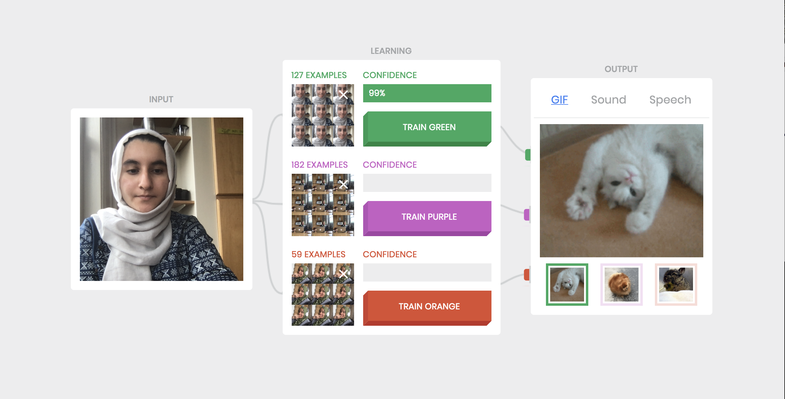

Assignment 1
Due Monday September 10th at 10 AM
Build Teachable Machine on Your Computer
Train Some Classes
For this assignment, we were instructed to run some experiments with a partner and note down our observations.
Task 1: We trained the network with a series of our facial expressions and observed that the network can tell the difference between the two faces with a confidence of greater than 95%.

Task 2: I trained the network on various inanimate objects, including my phone, notebook, and water bottle and observed a confidence of minimum 95%. However as I take the object further away from the camera, it begins to misclassify. For example, the bottle is mistaken to be the phone at a confidence level of approximately 75% due to the similarity of color between the two objects.

Task 3: I trained the network on two different classes with the same image set; specifically my two classes were my face in a fixed facial expression. In this case, I observed the confidence shift between the two classes with each having approx 50%.
Task 4: With the first class defined as myself two different people having Expression A and the second class defined as two people having Expression B, the classifier was able to distinguish between the two facial expressions at a confidence of 90% as well as the two faces.


Task 5: With the first class defined as person A very close and the second class defined as person B very far, the network was very confused and would sometimes misclassify person A as person B and it could be argued that it was training based on distance. I also trained the network with a 3rd class of person B close to the camera, observing that the network could now identify faces with a confidence of 95%.
Task 6: The Russian Tank Parable is used to illustrate when a network learns based on a different feature in the image rather than the one you assume - in this scenario, the images were trained on the classes cloudy/sunny rather than trees/camouflaged tanks.
Some examples to illustrate this include:
Example 1: First class defined as a pencil, Second Class defined as a pen. The intended classification is the object but the real classification could be the background of the object (kitchen versus classroom)
How Teachable Machine Works
Teachable Machine is based on representing images as points in a high-dimensional vector space. The vector space coordinates are generated by a multilayer convolutional neural network called squeezenet. The version of squeezenet included in Teachable Machine has been trained on millions of images. Given a new image, it produces 1000 values that reflect various attributes of the images, presented as a 1000-dimensional "logits" vector.
I did a little more research on squeezenet and found these links helpful:
https://www.kdnuggets.com/2016/09/deep-learning-reading-group-squeezenet.html
Examining the Confidence Levels

Task 1: I stored the variables confidences and nCounts in the global variables globConf and globNCounts respectively and used the window.alert function to display a dialog with the number of closest matches and the confidence level.
Task 2: After redoing the experiments from section 2, I observed the following (with support from confidences and top K values):
Experiment 1: I trained the network on the same inanimate object as classes (bottle, notebook, and iPad) with the same background, and observed that all the top K images were from the a single class with a confidence of almost 100% for test images that were the same as the trained images. The same was observed for the bottle object placed very far away from the screen. However for images of notebook and iPad, the network was very confused as these objects are of the same shape but different color.
Experiment 2: With the same 3 classes as before, I trained the network with an object on one background and tested it on another background. I saw that the network had trained on the background and was unable to classify the object to its correct class.
Experiment 3:
Scaling the Confidence Values
Look at the code in computeConfidences() and try to understand what it does. You can see that it computes the confidence for each class by just adding up the number of the TopK images in each class (the values of nCounts in the code) and dividing by K (the value of kVal).
For some applications, it might be better to scale the confidences, rather than just making them proportional to the number of TopK images. For example if class A has 10 TopK images, and B and C each have 5 images, it might be better to say that class A has confidence 1 and B and C have 0, rather than saying that A has confidence 0.5 and B and C each have 0.25 as things are now. For other applications, it might be more appropriate to divide the total confidence equally among all the classes that have at least one TopK image, or at least 2 TopK images.
1. Modify the code in WebcamClassifier.js to experiment with different ways of computing confidences, such as weighted vs. not weighted. You might want to keep things so that confidence values can be interpreted as probabilities, that is, so that each value is between 0 and 1 and so that the confidences for all three classes sum to 1. But this is up to you. Write up and turn in your modifications.
2. Using your modified confidence calculations, try some of the example scenarios that confused the network, that you looked at in section 2 and section 4. Does one of your new methods perform better? Why/why not do you think so? Document and turn in the modified and unmodified results for a “confusing” example. Use screen capture to include images if appropriate.
3. What are some image classification situations where your alternative ways of confidences might come in useful?
Limiting the number of training examples per class
Further Explorations
Readings I Found Useful